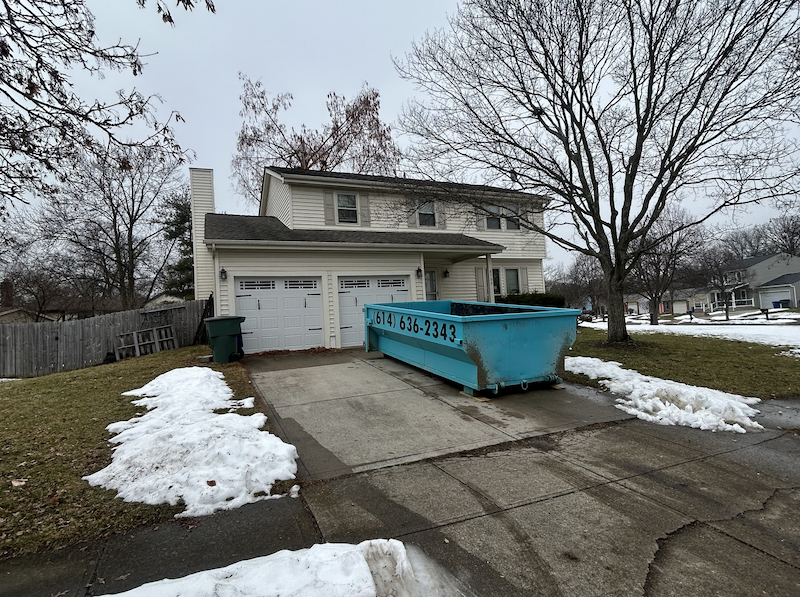

Can You Share a Dumpster Rental with Neighbors?
Yes—and it can be a smart way to split the cost when you and your neighbor both have stuff to clear out. Here's how to make it work, split costs fairly, and avoid the one thing that catches people off guard.

I got a call last spring from a homeowner in Worthington who was cleaning out her garage. She was ready to book, but before she did, she asked: "Is it okay if my next-door neighbor throws some stuff in too? She's been meaning to clear out her basement for months and this would be a good excuse."
My answer: absolutely. One person books, one person is responsible, and the neighbor uses whatever space is available. It happens more than you'd think—especially in the spring when half the street seems to tackle cleanout projects at the same time.
But before you and your neighbor split a dumpster, there are a few things worth talking through upfront. The arrangement is simple, but if you skip the conversation about ground rules and weight, you can end up with a surprise at the end that the neighbor—or more specifically, you—has to pay for.
Here's what you need to know.
Yes, You Can Share a Dumpster Rental
There's nothing unusual about it. One person books the dumpster, it gets delivered to their property, and whoever has access to it can use it. I don't require separate contracts for each person contributing debris—the account belongs to the person who booked.
The dumpster sits in your driveway (or wherever we agree to place it), and your neighbor walks their items over. It doesn't need to straddle a property line or sit on both driveways—it works fine from one property as long as your neighbor can get to it.
The more important question isn't whether you can share a dumpster—it's whether you should, and how to do it without problems.
The One Thing That Matters Most: Responsibility
When you book a dumpster, you're the account holder. That means everything about that dumpster is your responsibility—what goes in it, how full it gets, and how much it weighs.
If your neighbor throws in a bag of paint cans (a prohibited item), you're the one I call. If the combined debris pushes past the 4,000 lb weight limit, the overage fee comes to you. If the dumpster gets overfilled above the rim and I can't legally haul it, you're working with me to figure it out—not your neighbor.
This isn't meant to scare you off the idea. Most neighbor-sharing arrangements go completely smoothly. But you should know going in that you're vouching for what goes into that container. The relationship with your neighbor needs to be solid enough that you trust them to follow the rules.
Who's Responsible for What
You (the account holder) are responsible for:
- Everything that goes into the dumpster, including your neighbor's items
- Keeping total weight under 4,000 lbs
- Making sure no prohibited items end up in the container
- Keeping the fill level at or below the top edge of the dumpster
- Any overage fees, extension charges, or additional costs
Your neighbor is responsible to you—not to me. How you settle costs and expectations between yourselves is up to you.
The Weight Limit: The Detail That Catches People Off Guard
Our 14-yard dumpster includes up to 4,000 lbs in the base price of $344.52. That's enough for most household cleanouts and renovation projects—but when two households are contributing debris, the combined weight can add up faster than either person expects.
Here's why this matters specifically for shared rentals: each neighbor tends to think of the weight limit in terms of their own debris. "I'm only throwing in a few bags of junk, it'll be fine." But those bags of junk from both households add up, especially if either person has anything heavy—old appliances, concrete blocks, tile, or roofing materials.
Before you commit to sharing, have a rough conversation about what each person is putting in and whether there's anything particularly heavy. It doesn't need to be scientific—just a gut check so you're not blindsided.
| Material | Weight per Cubic Yard | Notes |
|---|---|---|
| Household junk / furniture | 100–300 lbs | Light—even a full dumpster of household items usually stays under limit |
| General construction debris | 300–500 lbs | Drywall, lumber, carpet—moderate weight |
| Tile, brick, concrete | 1,500–3,000 lbs | Heavy—a small amount can eat into the weight allowance fast |
| Roofing shingles | 750–1,500 lbs | Dense—a few layers of shingles adds up quickly |
| Yard waste / brush | 200–500 lbs | Wet yard debris can be heavier than it looks |
If both neighbors are throwing in light household junk, the shared weight limit is a non-issue. If either person has anything in the heavy category, account for it before you start loading.
Overage is charged at $75/ton beyond 4,000 lbs. If you go over, we'll let you know when the dumpster is weighed at the facility—but it's much easier to stay under the limit than to deal with a charge after the fact.
How to Split the Cost Fairly
The simplest approach: 50/50. You each pay half of $344.52, which works out to about $172 per household. If both neighbors have a similar amount of stuff, this is the easiest split and there's nothing to argue about.
But 50/50 only makes sense if the contributions are roughly equal. Here are a few other ways to divide it:
Split by Space Used
If one neighbor fills two-thirds of the dumpster and the other fills one-third, divide the cost proportionally. This takes a bit of estimation, but it's fair when the volumes are clearly different—like if you're doing a full garage cleanout and your neighbor is just tossing a couch and some boxes.
Split by Weight Contribution
If one person is loading light household items and the other is throwing in heavy demo debris—tile, concrete, old appliances—consider weighting the split toward the person adding the heavier material. Heavy debris is what drives the weight limit and any potential overages.
One Person Pays, One Person Pays Them Back
Since one person has to book and pay upfront, the simplest arrangement is: you book it, your neighbor pays you their share before or after the rental. No need to overcomplicate it.
Whatever method you pick, agree on it before the dumpster arrives—not after you've both filled it and the bill is due.
Ground Rules to Agree On Before You Start
Most neighbor-sharing problems don't come from the logistics—they come from assumptions. One person assumes the dumpster will be available all weekend; the other planned to fill it Tuesday morning and call for pickup Tuesday afternoon. One person assumes anything goes; the other didn't realize certain items are prohibited and tosses something they shouldn't.
A five-minute conversation upfront prevents all of this.
Ground Rules to Set Before Sharing
- Who's booking and paying upfront? Clarify how and when the non-booking neighbor pays their share.
- What can and can't go in? Walk your neighbor through the prohibited items list—paint, chemicals, propane tanks, tires, hazardous materials. They're your responsibility once they're in the dumpster.
- Fill to the top edge, not above it. Items must stay at or below the rim. Nothing sticking up above the sides. This is a safety and legal requirement for hauling on public roads.
- When is each person loading? Coordinate so you're not both showing up with full loads at the same time or blocking each other's access.
- Who decides when to call for pickup? The account holder calls—but agree on the timing so your neighbor has the chance to finish loading before it's picked up.
- Does either person have anything particularly heavy? Tile, concrete, appliances, shingles—flag it now so you don't hit the weight limit mid-project.
- What if one person needs more time? Extensions are $15/day. Agree on who pays for any extension if the project runs long.
When Sharing Makes the Most Sense
Not every situation calls for splitting a dumpster. Here are the scenarios where it works particularly well.
Both Neighbors Are Doing Cleanouts at the Same Time
Spring is when I see this most. Half the street decides it's finally time to clean out the garage, and two or three neighbors realize they could split one dumpster instead of each renting their own. If both households are dealing with light household junk—furniture, boxes, old clothes, random accumulated stuff—there's often plenty of room for both.
This is the ideal scenario. Neither household has massive amounts of heavy debris, both need the dumpster for a few days, and splitting the cost saves each person over $150.
Shared Fence or Landscaping Project
You're splitting a fence removal. Or a tree came down on the property line and you're both clearing the debris. Or you did a joint retaining wall project and there's leftover material on both sides.
These situations are perfect for a shared rental because the project itself already spans both properties. One dumpster, placed at the edge of the project, serves both households naturally.
One Neighbor Has Leftover Space
This one's simple and happens all the time. You rented a dumpster for a project and only filled half of it. Your neighbor has been eyeing that dumpster from across the fence for three days and finally asks if they can toss a few things in.
As long as there's room and you're okay with the arrangement, there's no reason to say no. You've already paid for the rental—any space your neighbor uses costs you nothing extra unless their items push you past the weight limit.
Just make sure the dumpster won't be picked up before they finish, and that you've had the brief conversation about what they're throwing in.
HOA-Coordinated Neighborhood Cleanup
Some HOAs organize community cleanup days or coordinate bulk junk removal across multiple properties. Renting one or two large dumpsters and splitting the cost across participating households can be significantly cheaper than each household renting individually.
For HOA arrangements, the logistics are a bit more involved—you'll want to designate a point person for the booking, collect payment shares upfront, and make sure the placement location works for multiple households to access it. But for a well-organized neighborhood event, it's an efficient approach.
When Sharing Probably Isn't the Right Move
Sharing works great in the right situation. But it's not always the best approach.
When Both Households Have Major Projects
If you're doing a full basement cleanout and your neighbor is doing a kitchen renovation, trying to share one 14-yard dumpster might not leave enough room for both. You'd either need to sequence who loads when, extend the rental significantly, or rent separately. In this case, two dumpsters often makes more sense than one shared one.
When You Don't Know the Neighbor Well
Remember—you're on the hook for whatever goes into that dumpster. If you don't know your neighbor well enough to trust that they won't toss something prohibited, or to have a direct conversation about costs, sharing a dumpster puts you in an uncomfortable position. In that case, either rent separately or have a very clear agreement in writing before the dumpster arrives.
When Timing Doesn't Line Up
You need the dumpster picked up Saturday morning because your driveway needs to be clear by noon. Your neighbor wants to load Sunday. The logistics don't work—unless you extend the rental, which adds cost and needs to be factored into whoever's paying for the extra days.
A Real Example of How It Works
Two neighbors in Hilliard called me last fall. They lived on a corner lot and a large tree limb had come down on the shared fence, damaging both sides. They'd already removed the limb and replaced the fence panels together, and now they had a pile of old fence materials, tree debris, and general yard waste split between their two properties.
One neighbor booked the dumpster. We placed it at the corner where both could easily access it. They split the cost 50/50 since the debris was roughly equal from each side. Total cost to each household: about $161, plus they extended one day to finish the yard cleanup—$7.50 each for the extension day.
Clean property, done in two days, cost each person less than half what they'd have paid renting separately. That's the neighbor-sharing arrangement at its best.
Ready to Book?
Whether it's just you or you and a neighbor splitting it, the booking process is the same. One person calls or books online, we schedule delivery, and the dumpster arrives at your property.
If you want to talk through whether sharing makes sense for your specific project—how much space you'll need, whether the weight will be an issue, how to handle the logistics—call me before you book. I'd rather spend five minutes helping you figure out the right approach than have you end up with a situation that doesn't work.
- 14-yard dumpster: $319 + 8% tax = $344.52 total
- Includes: Delivery, 3 days, 4,000 lbs, pickup, driveway protection boards
- Extensions: $15/day if you need more time
- Same-day delivery available when you book before 2 PM
- Book online: Quick online booking available 24/7
- Call to talk through your project: (614) 636-2343
Serving Dublin, Hilliard, Powell, Upper Arlington, Worthington, Plain City, and the greater Columbus area. Locally owned, no hidden fees, and I'm always available to talk through the details before you book.